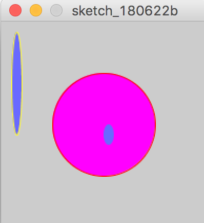
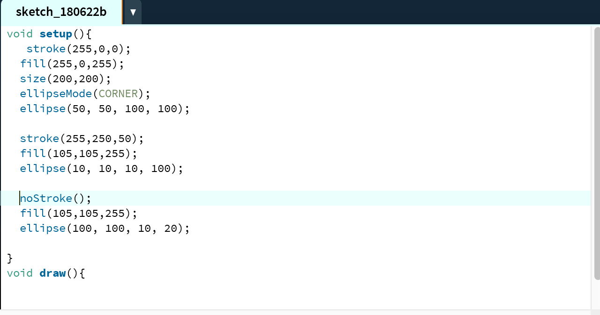
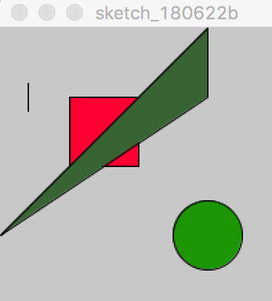
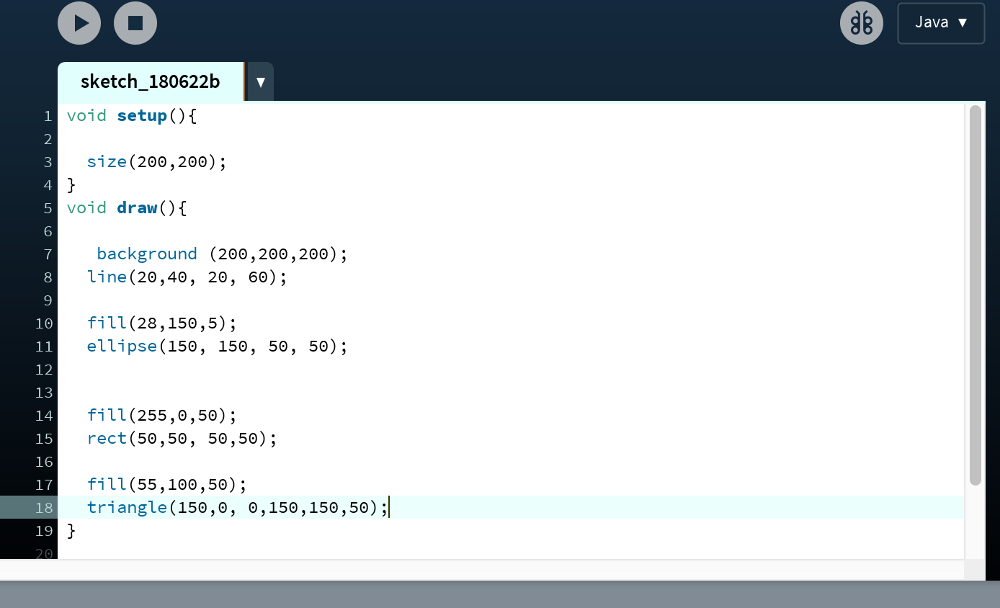
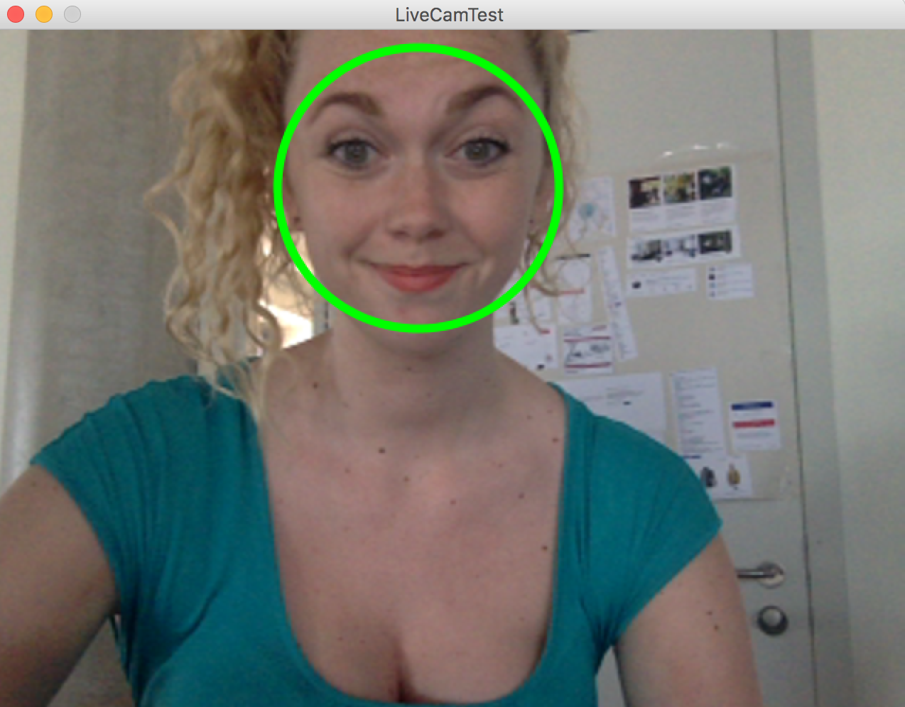
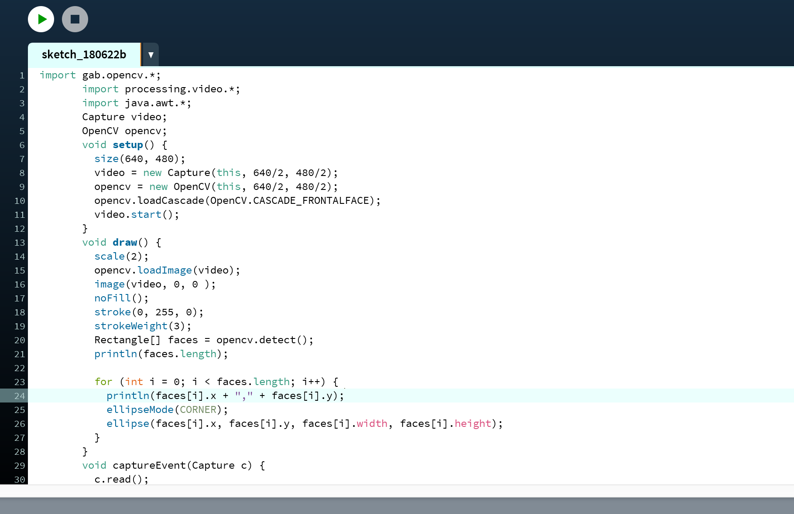
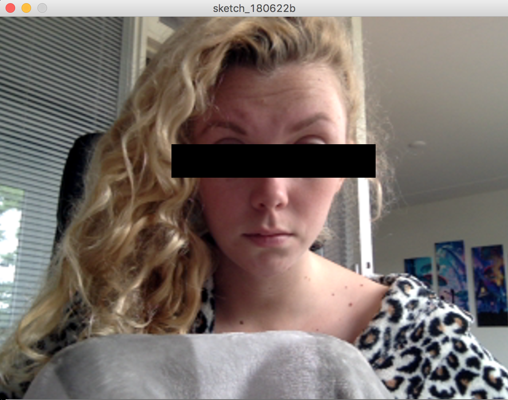
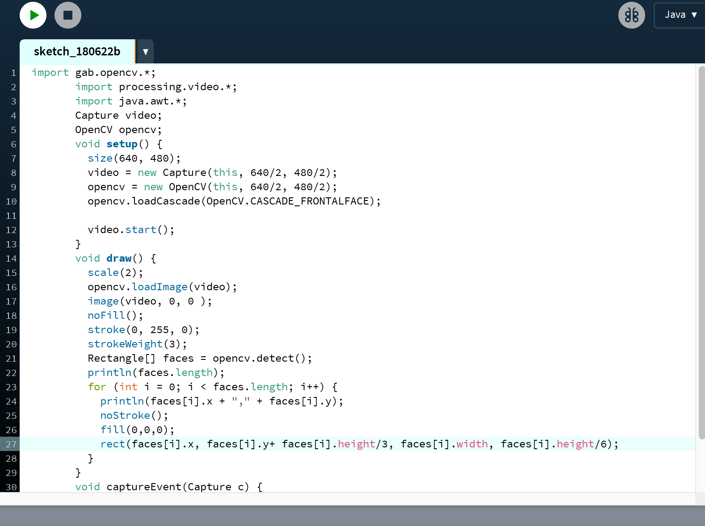
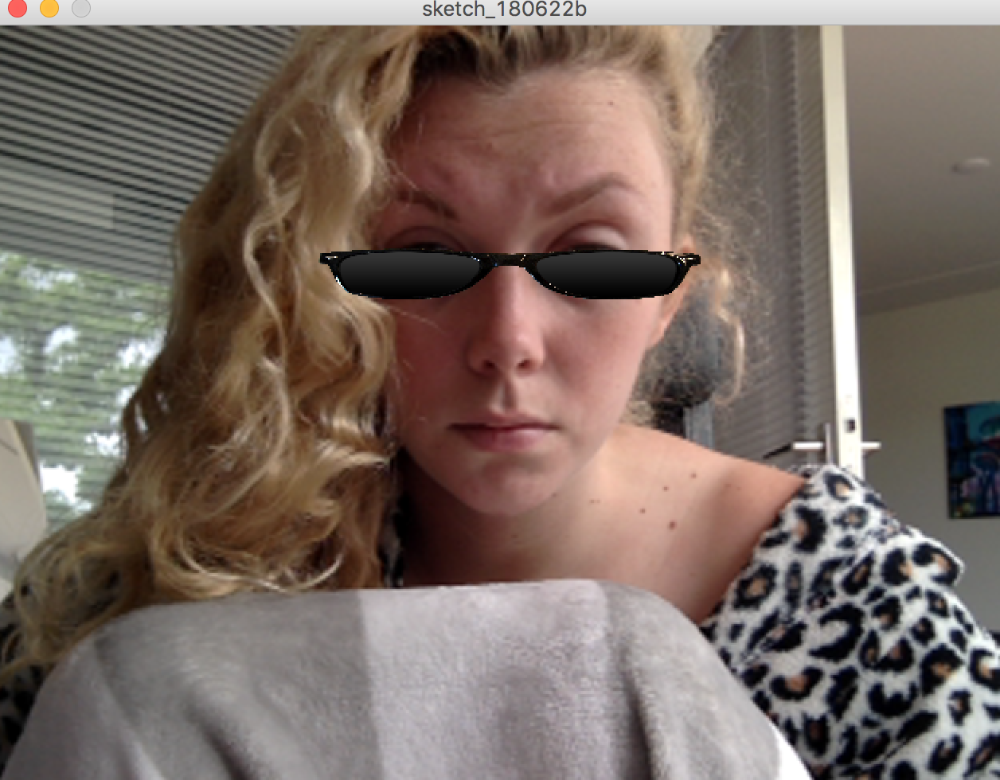
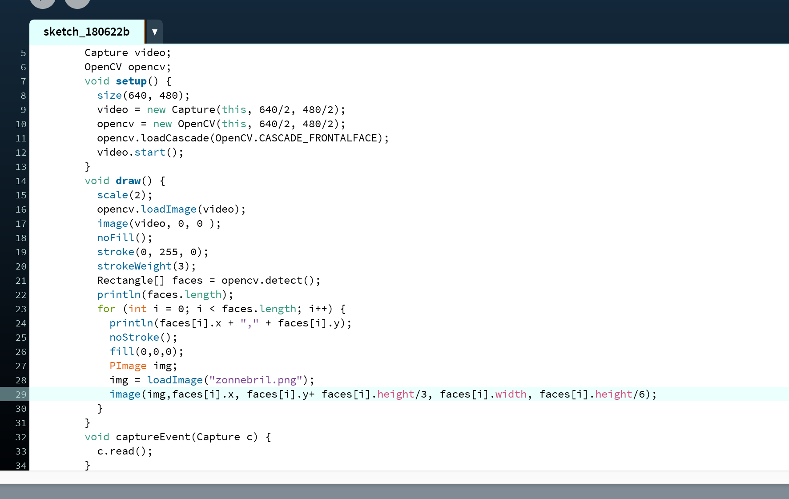

Deze code was goed te begrijpen d.m.v de handleiding en lukte goed.
 Ook deze code lukte prima, al had ik wel wat moeite als het ging om de driehoek en dan vooral welke van de 6 cijfers wat betekende. Ik raakte wat in de war over wat nou de positie aangaf en wat de grootte.
 Deze code ging mij nog redelijk goed af. Het was vooral de bedoeling dat de rect een cirkel zou worden en dat ging prima.
 Deze opdrachten vond ik merkbaar een stuk lastiger dan de vorige opdrachten. Het coderen begreep ik ineens voor geen meter meer, met wat hulp ben ik hier uiteindelijk wel uitgekomen.
 Deze opdracht vond ik het aller lastigst. Ik heb er een tijdje over gedaan voor ik begreep hoe ik de afbeelding uberhaupt te voorschijn kreeg. Toen ik hem ook eindelijk op de goede plek kreeg, lukte het mij niet meer om hem goed geschaald hier te krijgen.
 